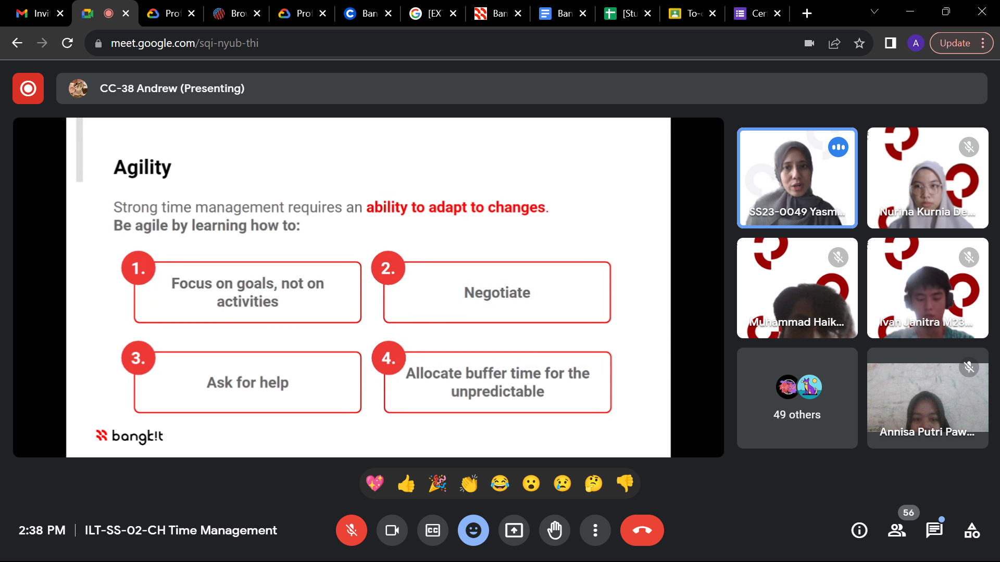

ABOUT
I can solve problems well and creatively. In Madura, I am a student from Trunojoyo Madura University majoring in informatics engineering. My initial interest in the world of UI/UX design was when I entered college and studied UI/UX design.
While I was studying at Trunojoyo Madura University, I participated in the 11th Volunteer Asean Paragames in Solo where I joined the IR protocol and hospitality division which is responsible for building coordination with the Asian Paralympic Committee and providing services for VIP or VVIP guest needs.
I have the opportunity to contribute further with my abilities and interest or experience.
EXPERIENCE
In 2022 I had the opportunity to volunteer at an international event, namely the 11th ASEAN Para Games. At this event I joined the VIP and VIP protocol and service division, my job was to welcome and accompany VIP and VIP guests from various countries. I am very happy to be able to join as a volunteer at this event, because I can meet many new people with various backgrounds, then I can hone my ability to speak English and also I can be more grateful for life because I meet many people who have physical limitations but they don't. give up and be grateful for their situation.

In 2023, I will take part in the awakening program with the cloud computing learning path. I chose cloud computing because I was very interested in cloud-based storage. In my first month on the rise, I learned several new lessons and also several lessons that I had learned when I was in the 3rd semester.